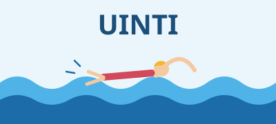
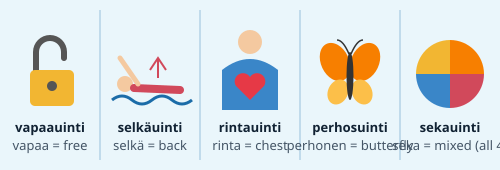
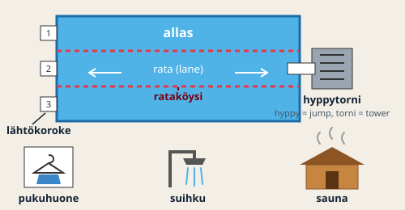
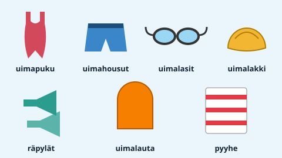
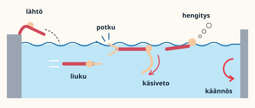
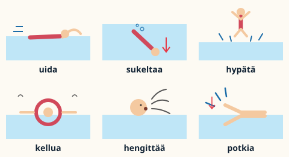
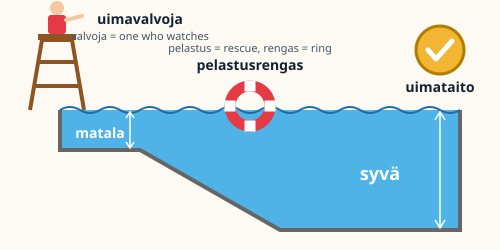

Uinti – sanasto
1 / 8Tēma6 daļas
Uinti – sanasto
Finnish swimming vocabulary. uida = to swim, uinti = swimming, uimari = swimmer. Almost every word starts with uima- or uinti-.

Šajā tēmā
- 1Uintilajit – strokes
- 2Uimahalli – swimming hall
- 3Varusteet – gear
- 4Tekniikka – technique
- 5Verbit – verbs
- 6Turvallisuus – safety
Velc vai spied →1 / 8
1Uinti – sanasto
Uintilajit – strokes
-uinti = swimming. The first half names the body part or animal: selkä = back, rinta = chest, perhonen = butterfly, vapaa = free, seka = mixed.

vapaauinti (krooli) – freestyle / front crawl
selkäuinti – backstroke
rintauinti – breaststroke
perhosuinti – butterfly
sekauinti – medley
Uinti – sanasto2 / 8
2Uinti – sanasto
Uimahalli – swimming hall
uima + halli = swim hall. rata also means a railway track; lähtö = departure, koroke = platform.

allas – pool
rata – lane
rataköysi – lane rope
lähtökoroke – starting block
hyppytorni – diving tower
pukuhuone – changing room
suihku – shower
sauna – sauna
Uinti – sanasto3 / 8
3Uinti – sanasto
Varusteet – gear
uima- + an everyday word: puku = suit, housut = trousers, lasit = glasses, lakki = cap, lauta = board.

uimapuku – swimsuit
uimahousut – swim trunks
uimalasit – goggles
uimalakki – swim cap
räpylät – fins
uimalauta – kickboard
pyyhe – towel
Uinti – sanasto4 / 8
4Uinti – sanasto
Tekniikka – technique
One length in order: lähtö → liuku → käsiveto + potku + hengitys → käännös.

lähtö – start
liuku – glide
käsiveto – arm pull
potku – kick
hengitys – breathing
käännös – turn
volttikäännös – flip turn
Uinti – sanasto5 / 8
5Uinti – sanasto
Verbit – verbs
Minä uin, sinä uit, hän ui. Osaatko uida? = Can you swim?

uida – to swim
sukeltaa – to dive (underwater)
hypätä – to jump
kellua – to float
hengittää – to breathe
potkia – to kick
Uinti – sanasto6 / 8
6Uinti – sanasto
Turvallisuus – safety
syvä pää = deep end, matala pää = shallow end.

uimavalvoja – lifeguard
pelastusrengas – life ring
syvä – deep
matala – shallow
uimataito – ability to swim
Uinti – sanasto7 / 8